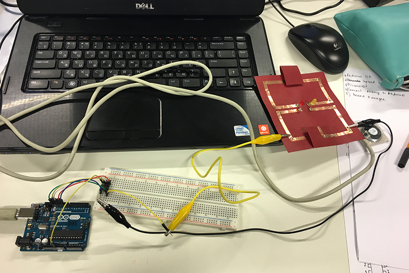

ATtiny85 is smallest microcontroller in ATMEL’s AVR family having less number of pins. It has 8 pins in total in which 6 pins are for programmable Input/Output. It was developed for low power applications such as (battery operated applications).
1
To program the ATtiny85 we need to first set Arduino Uno in ISP mode.
2
By default Arduino IDE doesn't support ATtiny85 so we should add ATtiny boards to Arduino IDE. At first you should go to File/Preferences and copy this link: https://raw.githubusercontent.com/damellis/attiny/ide-1.6.x-boards-manager/package_damellis_attiny_index.json
3
After that you have to go to Board manager and find there Attiny and install it.
Then you will be able to see it in the end of the list. You have to choose it as on the photo.
4
Now you have to connect you ATtiny to Arduino using breadboard.
5
Choose correct processor, clock and programmer as on next photos.
When everything is correct you have to Burn Bootloader.
Now you can disconnect your Arduino from the computer. It is better to connect it to computer only when you need to download something there, in other cases it is safer to keep it disconnected.
6
Next step is creating your code. We will programm tone melody with LED blinking.
In a new window erase everything and paste your code. For Jingle Bells melody you can use this code. Then you have to change pins for LED and speaker for those you are going to use.
7
Now you need to connect LED and speaker to your ATtiny to be able to see your result. LED we connected to the pin 3 trough resistor and Speaker to pin 4.

8
When everything is ready you have to verify your code. If it is ok then connect your Arduino to your computer and upload code to ATtiny.